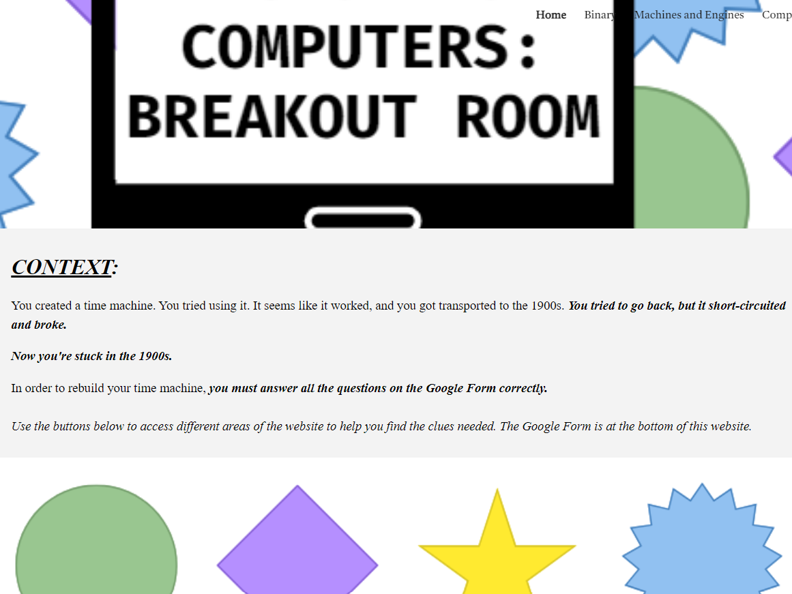
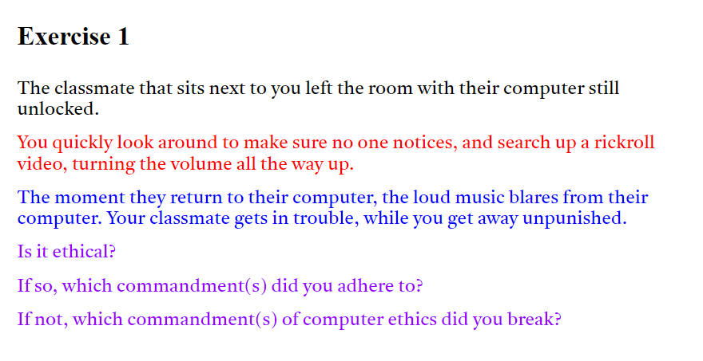
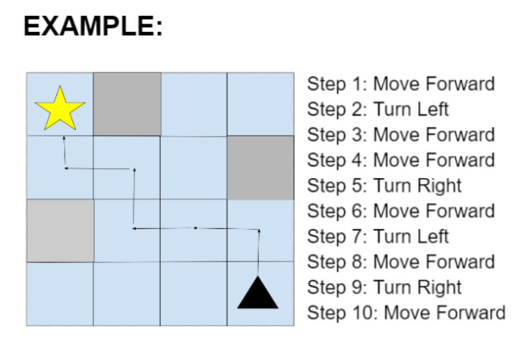

Welcome back CIT wildcats! This year has so many opportunities and experiences to offer students new and old, and I can’t wait to share some of that with you, dear reader.
To start off the new year right, the CIT Council hosted our annual freshman family potluck to introduce incoming students to their teachers, older students, and most importantly, each other! While they take an informal tour around the specialty center hallway, they engage with other students in team building activities like debates about technology and two-truths-and-a-lie. Since the incoming class size has increased, it is imperative that we give new students many opportunities to get to know each other early and form a strong community. In addition, they can look forward to an email-buddies social (named after the program in which upperclassmen reach out to new freshmen and offer support) and the freshman-sophomore social for more CIT culture!
Thanks to every attendee who brought food to share and an open attitude! This incoming class is amazing and we can’t wait to see what they have in store over these next four years.
Vee P., 12, roving reporter 8/31/24


We would like to share some exciting news: a team of CIT students has just been announced as winners of the Congressional App Challenge at the US Capitol building. The quartet of Abhi S., Sid B., Sujash J., and Yash S. worked together to build an app: PatriotPerks, which benefits veterans and supports small businesses by providing veteran discounts at participating stores. The innovative project won a first place prize and got attention from Congressman Rob Wittmann at the event. The project team has a bright future, and we can’t wait to see where they go with it next.
In addition, they want to encourage future center students to continue participating in this computer science competition since it’s a great opportunity to make an impact in the community and be recognized beyond a schoolwide level. We are so proud of these boys for working together on this non profit effort and making the center proud. To hear more about this project, visit this link on the congressional app challenge website: https://www.congressionalappchallenge.us/23-VA01/
Vee P., 11, roving reporter 4/12/24
 This year, sophomore Bhavika S. led her first project in her Information Technology Project Management class. With her devoted efforts, the team went on to host the CIT’s Computer Science Education week, with daily activities ranging from break out rooms to constructing fake cyber scams. "In Project Management, I hoped to learn how to responsibly and effectively lead a group. I definitely think I accomplished these and grew as a leader," Bhavika expressed in a reflection about her successes. Every year, more students get their first tastes of working on projects in school that have real impacts on the world around them. By resourcefully using tips and feedback from previous years, center students like Bhavika have the opportunity to grow their critical thinking skills while leaving a lasting mark on the CIT.

Diving into the team's Google Drive, Bhavika shared, "the Lessons Learned section was incredibly helpful; it gave me and the team insights into what we should and should not be doing. It allowed us to grasp how we could start to accomplish the given list of deliverables. Her proactive approach to learning from past experiences demonstrates her commitment to continuous improvement. By encouraging students to reflect on their project experience and write a “lessons learned” document, the CIT director, Ms. Norris, fosters an environment where students are constantly growing and improving their skills."
 Bhavika used her South compass personality type to “foster teamwork and a positive, humourous atmosphere,” and was incredibly successful in synergizing with her team. Her accomplishments help support the point that a student doesn’t have to be independent and controlling to be an effective leader. Reflecting on her first major team project, Bhavika highlighted, "It was a unique and fun project that involved both CIT and non-CIT members. I would definitely want to lead another project, as it gave me the experience of fostering my leadership skills and learning more about Computer Science." Overall, her team’s project work was completed thoroughly and on time due to the collaboration between team members and unique ideas that grew from the friendly environment. Below are some of the challenges that Bhavika and her team created to further Computer Science education. We hope she keeps up the great work!
Vee P., 11, roving reporter
2/4/2024
 On September 19, 2023, volunteering members of Deep Run’s CSHS (computer science honors society) chapter held an induction ceremony for new members, welcoming in 36 new scientists to its ranks. At the event, new members share their favorite computer scientist and recite the CSHS oath, promising to use their computer skills to benefit their communities. CSHS has remained an essential part of CIT culture- even with new inductees filing in and out- acting as a platform for student leadership and organization of computer science events.
On September 19, 2023, volunteering members of Deep Run’s CSHS (computer science honors society) chapter held an induction ceremony for new members, welcoming in 36 new scientists to its ranks. At the event, new members share their favorite computer scientist and recite the CSHS oath, promising to use their computer skills to benefit their communities. CSHS has remained an essential part of CIT culture- even with new inductees filing in and out- acting as a platform for student leadership and organization of computer science events.
 This year’s president of CSHS, Andrew L., and Vice President Heena P. spoke at the event, welcoming new students and sharing about their experiences. They, along with the other 8 officers, will work this year to run multiple events; next on the agenda is hour of code in which club members lead middle schoolers in coding activities and introduce them to programming concepts before they get to high school. After that, Deep Run has the unique opportunity to work with Virginia Star this year to refurbish old computers for families in need. Opportunities like these are only possible due to the teacher sponsors and student council which organizes meetings and spreads information to the over-100-person club.
This year’s president of CSHS, Andrew L., and Vice President Heena P. spoke at the event, welcoming new students and sharing about their experiences. They, along with the other 8 officers, will work this year to run multiple events; next on the agenda is hour of code in which club members lead middle schoolers in coding activities and introduce them to programming concepts before they get to high school. After that, Deep Run has the unique opportunity to work with Virginia Star this year to refurbish old computers for families in need. Opportunities like these are only possible due to the teacher sponsors and student council which organizes meetings and spreads information to the over-100-person club.
 A central part of CIT culture that I have seen as a student here is the consistent motivation to volunteer and support younger students. Large scale events like these wouldn’t be possible without the support of juniors and seniors in the CIT like those who served food, passed out pamphlets, and kept order at the CSHS induction. In sophomore year, all students take a project management class that teaches them how to work in a team and accomplish tasks within a time limit, and this course turns a group of techy students into fully fledged management teams, capable of organizing full events with little help from teachers. Thanks to everyone who helped out this year and who helps every year. It is a joy to see fellow students create great things.
A central part of CIT culture that I have seen as a student here is the consistent motivation to volunteer and support younger students. Large scale events like these wouldn’t be possible without the support of juniors and seniors in the CIT like those who served food, passed out pamphlets, and kept order at the CSHS induction. In sophomore year, all students take a project management class that teaches them how to work in a team and accomplish tasks within a time limit, and this course turns a group of techy students into fully fledged management teams, capable of organizing full events with little help from teachers. Thanks to everyone who helped out this year and who helps every year. It is a joy to see fellow students create great things.
Vee P., 11, roving reporter
12/13/2023